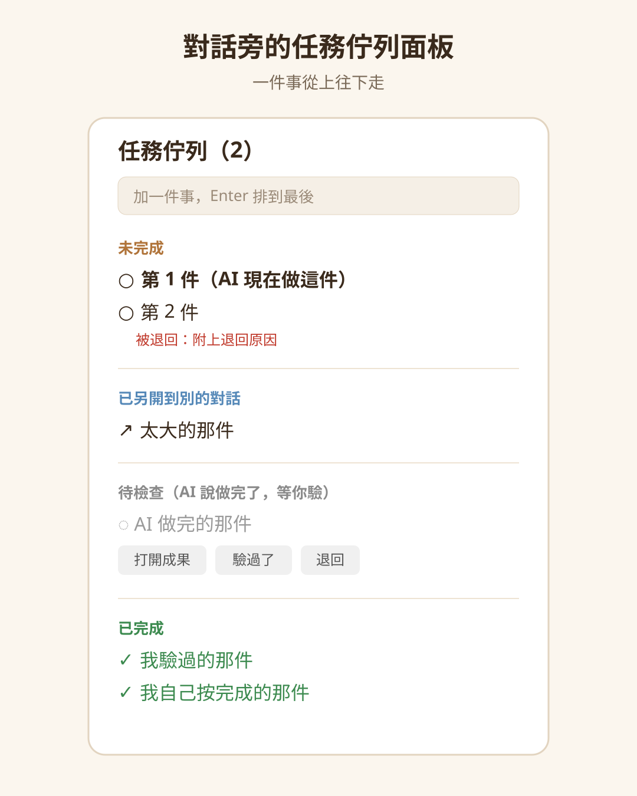
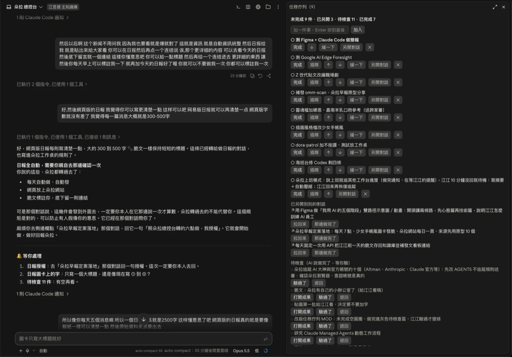
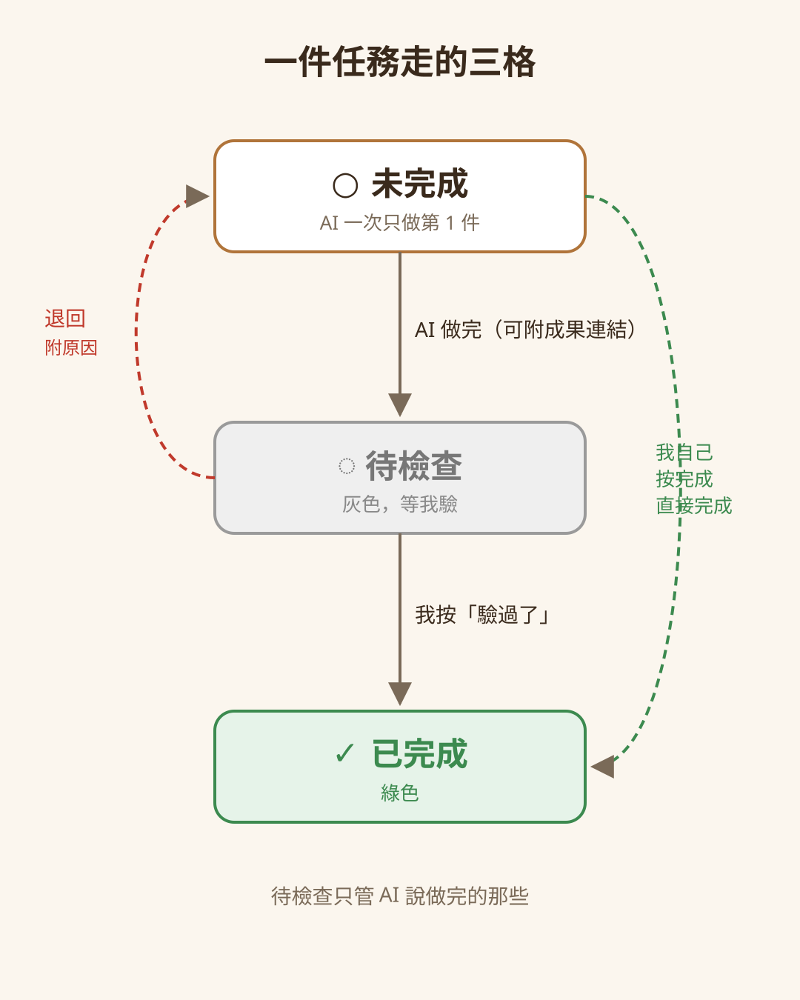

這篇在講什麼
我常常在一個對話裡開一個任務，做著做著又想到別的事，一路交代下去，做到後來自己忘了，AI 也只專注在眼前的任務，忘了前面交代的結論。我做了一個 Claude Code Mod「任務佇列」，把交代的事排在對話旁邊。這篇講它怎麼用、10 月 14 日改版後多出來的「待檢查」區、它的限制，最後附不寫程式也能用的提示詞。
- 在一個 AI 對話裡一次交代好幾件事，做到後來自己也忘了的人
- 用 Claude Code 工作，想知道 Mod 還能拿來做什麼的人
- 常常 AI 說做完了，自己卻沒時間一件一件確認的人
- 任務佇列的用法：怎麼加、怎麼排順序、太大怎麼另開對話
- 未完成、待檢查、已完成三種狀態，為什麼 AI 說做完要先給我驗
- 一段不寫程式也能貼給 AI 的清單提示詞
一個對話交代好幾件事，我忘了，AI 也忘了
我常常在一個對話裡開一個任務，做著做著突然想到別的事。我當時是這樣講的：
有時候我會在一個視窗開一個任務，裡面有時候突然想到做 A 做 B 做 C，但有時候做到自己忘記了。
忘記的不只是我。AI 會專注在眼前的任務，我前面交代過它的結論，它做到後面又忘記了。
所以我做了一個 Claude Code Mod，叫「任務佇列」：
我交代他要做什麼事情，他就立刻在旁邊這樣子。他自己可以檢查，那我也可以檢查。

任務佇列是什麼：常駐在對話旁邊的一張清單
任務佇列是 Claude Code 的一個 Mod，打開後是一個常駐在對話旁邊的面板。
- 面板標題寫「任務佇列（N）」，N 是這段對話還在排隊等著做的件數（不算已另開和待檢查的），看一眼就知道還剩幾件。
- 第一件字是粗體，那是 AI 現在該做的。
- 打
/tasks可以把面板叫出來。

這是第一版，我還在驗測。這篇想跟大家分享的是這個概念：這個 Mod 還蠻好用的。
- 離開超過一小時回來，AI 對話為什麼變貴？：也是我自己寫的 Claude Code Mod，那篇有講 Mod 是什麼、跟 Hook 差在哪。
怎麼把事情交代進佇列：在面板打字，或聊天時直接講
有兩種加法：
- 自己打：面板上方有輸入框，打一句按 Enter，排到最後。
- 聊天時直接講：我講到「還要做 A、做 B」，AI 照佇列附的規則，用 Mod 的佇列工具把它記進去，畫面跳一個「已記進佇列」的提示，然後回到手上那件事。
AI 怎麼知道佇列裡有什麼？我每送出一則訊息，Mod 都會把目前的佇列附給 AI（我在畫面上看不到這段），附的內容包含：
- 還有幾件未完成、每件的順序，第一件標「目前該做的」
- 規則：一次只做第 1 件；聊到新的事先記進佇列，再回到手上的事；我說「插隊」「先做這個」才插隊
順序我說了算：插隊、往上往下、緩一下
每一件未完成的任務旁邊有幾顆按鈕：
| 按鈕 | 做什麼 |
|---|---|
| 完成 | 我自己按的，直接算已完成 |
| 插隊 | 排到第一件 |
| ↑ ↓ | 往前或往後挪一格 |
| 緩一下 | 排到最後 |
| 另開對話 | 這件太大，拆去新對話做（下面講） |
| ✕ | 刪掉 |
面板沒有拖曳功能，所以排序用按鈕。也可以直接跟 AI 講「這件先做」「那件往後緩」，它會照著調。
改版：AI 說做完的，先進「待檢查」，我驗過才算完成
第一版 AI 做完一件就直接打勾。10 月 14 日我提了這幾點改版：
- 未完成用空心圓 ○，不用打勾，免得我誤以為做完了。
- AI 做完一件，先移到「待檢查」區，顯示成灰色，等我去檢查。有產出檔案或網頁的，附上連結。
- 我檢查過、確認了，才變綠色的「已完成」。

10 月 14 日改版後，一件任務會走這三格：
- 待檢查區每件有三顆按鈕：「打開成果」（AI 有附檔案或網址才會出現，按了用電腦預設的程式打開）、「驗過了」、「退回」。
- 退回：任務回到未完成、排到最後。我在對話裡跟 AI 講退回的原因，AI 退回時會把原因寫在那件任務下面，用紅字顯示；它下一輪看到的清單也會帶著這個原因，要照原因重做。面板上的「退回」按鈕只負責退回，不附原因。
- 我自己按完成的，直接完成，不用經過待檢查。
- 改版前已經打勾的，直接算已完成，不用重看。
- 佇列附給 AI 的規則寫明：做完一件要移到待檢查，「不能自己當成完成」，要等我驗。這是給 AI 的規則，程式沒有禁止 AI 自己按驗過（見下面限制）。
事情太大就另開對話，做完再收回來
聊著聊著，有時候會發現某件事太大，不適合塞在現在這個對話裡做。
這時候按那件任務的「另開對話」，桌面 App 會在對話裡跳出一張另開任務的卡片，點一下就開新對話。新對話開頭會帶著這件事的描述，並先跟我確認範圍再動手。
這件任務會移到面板的「已另開到別的對話」區，標一個 ↗，不會消失。之後有兩個選擇：
- 拉回來：試著收掉那張還沒點開的卡片，任務放回佇列最後；收不掉的話會提示我手動關。
- 那邊做完了：直接打勾完成。
這次改版本身就是這樣來的：改版任務佇列那件事，是我在另一個對話的任務佇列裡拆出來另開的。
一個 AI 總窗口管其他任務，旁邊這欄讓它不忘記
這個做法源自 Grok Bot 的模式：設一個總管 bot 去管其他 bot，也就是有一個 AI 主管，去管其他 AI 員工。
我現在也會有一個主任務、一個總機、一個總窗口，讓它幫我管其他任務。我也直接叫 AI 幫我開任務，再叫 AI 幫我去盯任務。
為了不要讓它忘記還有其他任務，我在旁邊開了這一欄，大家都比較好記，它可以看，我也可以看。
- 開任務：我跟 AI 說這件太大、另開對話，它會用佇列工具把這件另開出去，桌面 App 跳出另開任務的卡片，任務移到「已另開到別的對話」區。
- 盯任務：另開出去的任務不會從面板消失，留在「已另開」區，旁邊有「拉回來」和「那邊做完了」兩顆按鈕，總窗口這邊一眼看得到還有哪些在別的對話裡。
- 一個人怎麼帶 22 個 AI 員工？｜Grok Bot Galaxy 直播 Day 1 完整整理：那篇有講要讓你直接跟每個專家 bot 對話，還是設一個總管 bot 去管其他 bot。
任務佇列的限制
- 只在這一段對話裡：佇列跟著對話走，換新對話是空的。它不是我整體的待辦清單，我的工作代辦另外放在 Trello。
- 還在開發資料夾：目前它放在 Claude Code 的開發資料夾，還沒安裝成每段新對話都會自動帶著的固定外掛。
- 另開對話要桌面 App：另開任務的卡片是 Claude Code 桌面 App 的功能。
- AI 會不會照規則做，靠它讀附上的清單：「一次只做第 1 件」「聊到新的事先記下來」是 AI 照著規則做，Mod 沒有強制擋。AI 用的工具裡也有「驗過了」這個動作，Mod 只擋「不在待檢查區的任務不能驗過或退回」，沒有擋 AI 自己驗過。
- Mod 用你自己的權限執行：「打開成果」會用系統的 open 指令打開檔案或網址。這是我自己寫、裝在自己電腦上的 Mod。
驗收紀錄：第一版（10 月 12 日）claude plugin test 8 組通過，真實 App 上面板顯示、插隊、完成、另開卡片都跑過；改版（10 月 14 日）claude plugin validate 通過，claude plugin test 15 項通過、0 項失敗。
不寫程式，也能先用對話開一張清單
沒有這個 Mod，也可以用同樣的想法，請 AI 在對話裡幫你維護一張清單：
差別是這張清單在對話內容裡，對話越長，它離畫面越遠；Mod 是把清單放在對話旁邊，並在每次送出訊息時附給 AI。
這個 Mod 是我自己寫、自己用的
如果你也常在一個對話裡交代很多事，或想聊聊 Claude Code Mod 還能做什麼，歡迎到 LINE 社群跟我說。
我每月固定舉辦兩場免費線上講座，分享 AI × 知識管理的實戰經驗。